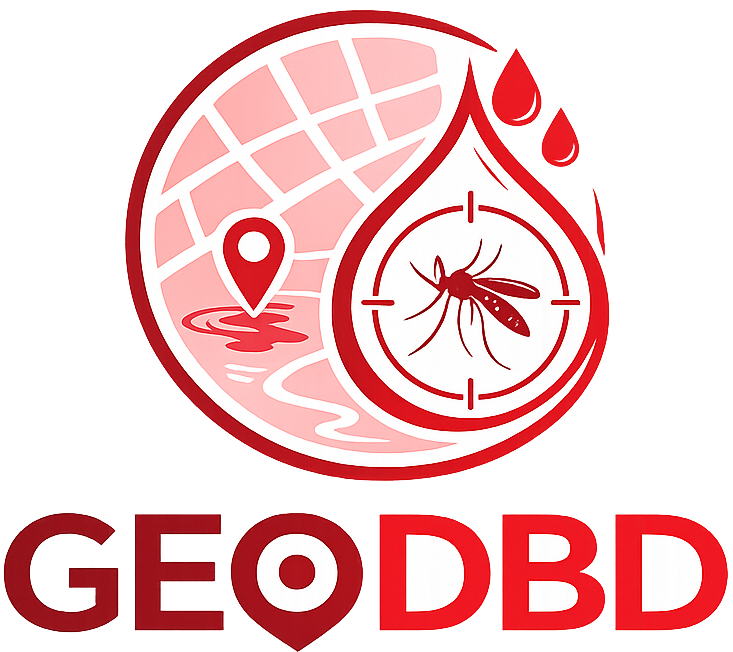
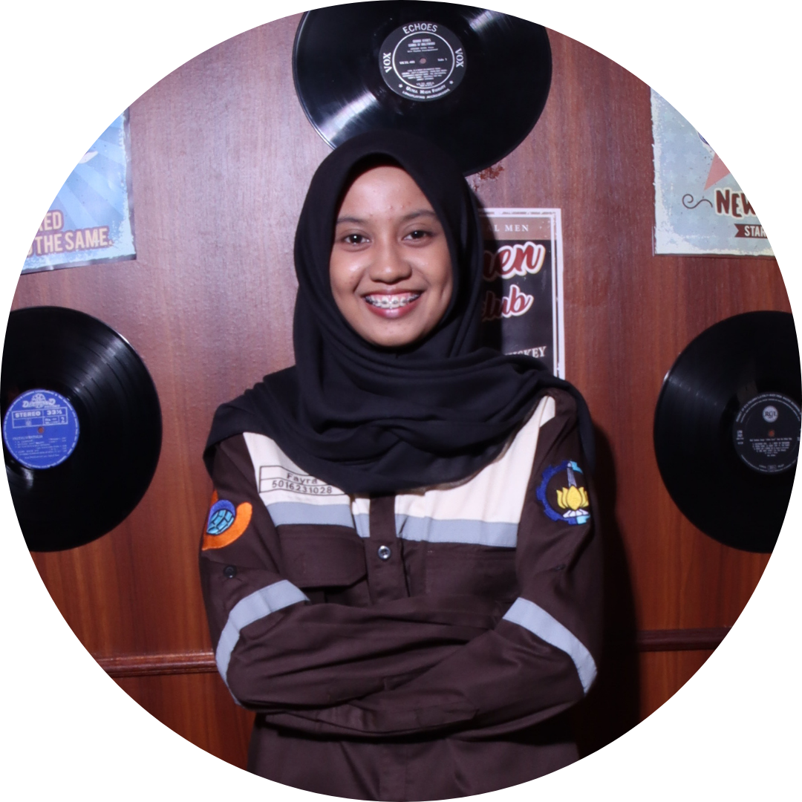
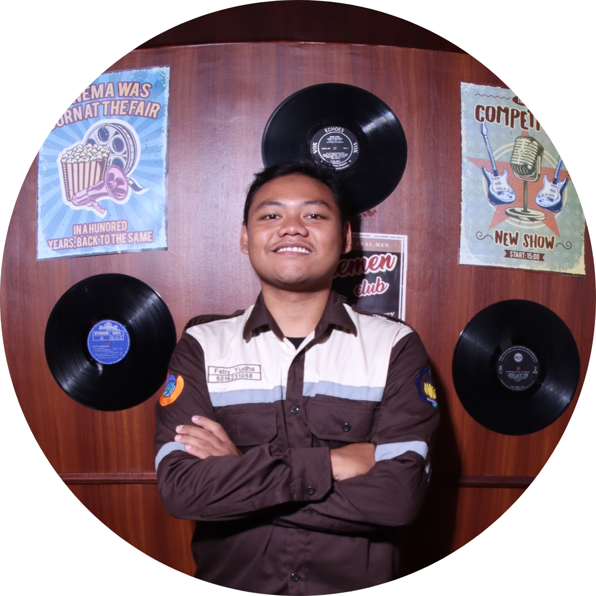
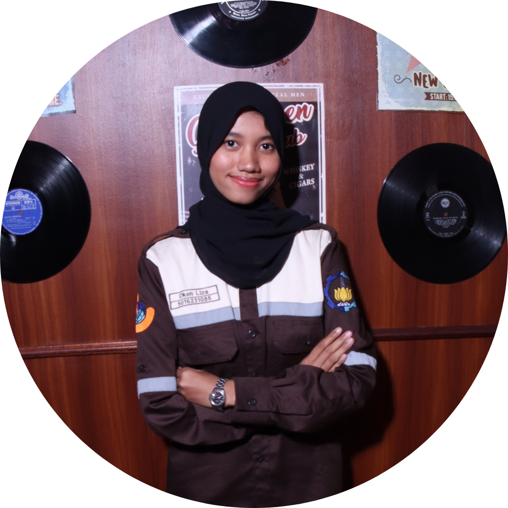
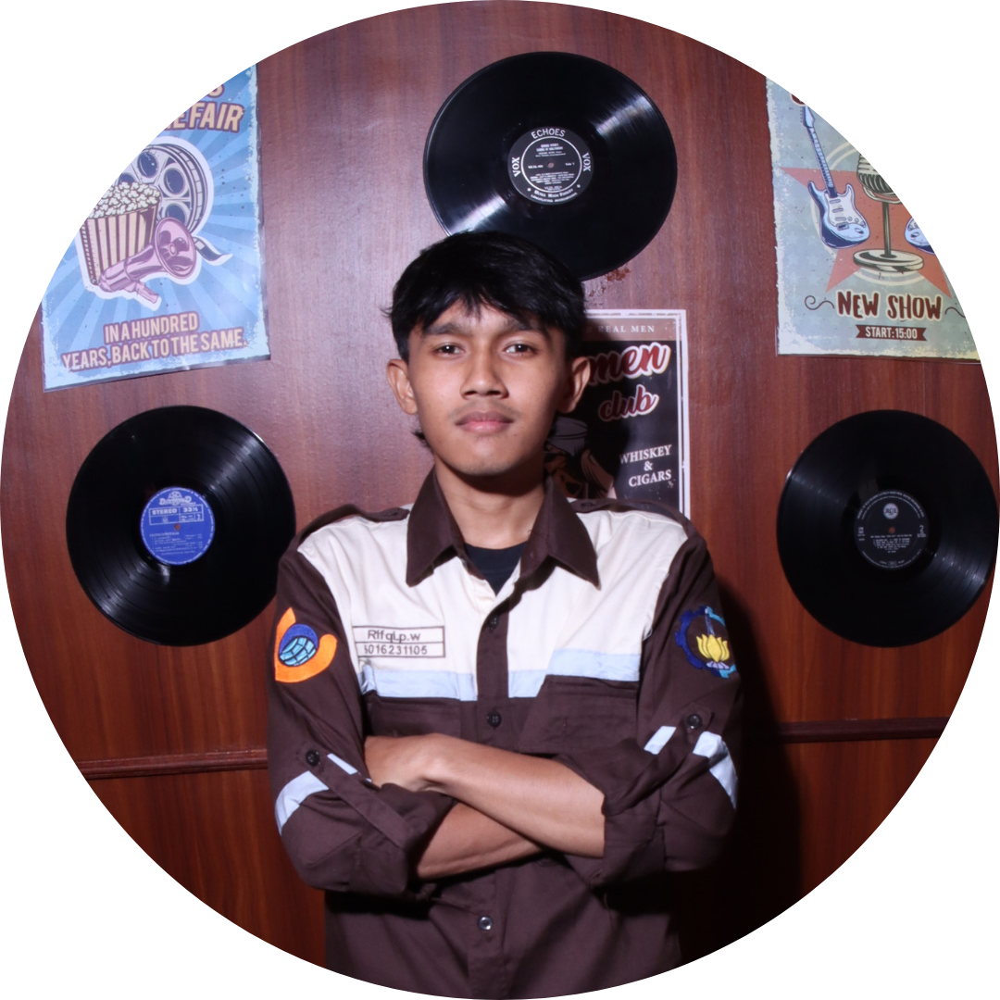
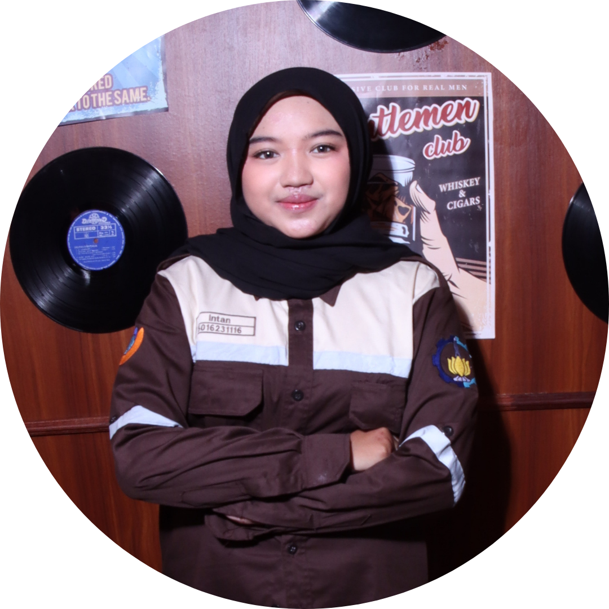

GEODBD
Environmental Geodesy for Dengue

Environmental Geodesy for Dengue
Analisis hubungan curah hujan, potensi genangan, dan persebaran penyakit DBD berbasis geodesi lingkungan
Kota Surabaya merupakan salah satu kota metropolitan di Indonesia yang memiliki karakteristik curah hujan tinggi, terutama pada musim penghujan. Intensitas hujan yang tinggi sering kali menyebabkan terjadinya genangan hingga banjir di berbagai wilayah kota. Kondisi ini tidak hanya berdampak pada aktivitas masyarakat dan infrastruktur, tetapi juga memengaruhi kondisi lingkungan yang menjadi faktor penting dalam penyebaran penyakit berbasis lingkungan. Lingkungan yang lembap serta adanya genangan air berpotensi menjadi habitat ideal bagi vektor penyakit, khususnya nyamuk Aedes aegypti yang berperan dalam penyebaran Demam Berdarah Dengue (DBD).
Seiring dengan meningkatnya kasus DBD di Kota Surabaya dalam beberapa tahun terakhir, diperlukan pendekatan yang lebih komprehensif untuk memahami faktor-faktor yang memengaruhi penyebarannya. Salah satu pendekatan yang dapat dilakukan adalah melalui analisis spasial berbasis geodesi lingkungan untuk mengkaji hubungan antara variabilitas curah hujan, potensi daerah rawan genangan, dan risiko kejadian DBD. Dengan adanya pemodelan spasial ini, diharapkan dapat dihasilkan informasi berupa peta risiko yang dapat digunakan sebagai dasar dalam perencanaan mitigasi serta pengendalian penyakit secara lebih efektif dan tepat sasaran.

Variabilitas curah hujan dan potensi genangan di Kota Surabaya diduga memiliki keterkaitan dengan peningkatan risiko Demam Berdarah Dengue (DBD), namun hubungan spasial antar variabel tersebut belum teridentifikasi secara jelas.

Menganalisis hubungan antara variabilitas curah hujan dan potensi genangan terhadap risiko DBD serta menghasilkan pemodelan peta risiko sebagai dasar pendukung pengendalian penyakit.

Memberikan informasi spasial terkait risiko DBD untuk mendukung perencanaan mitigasi oleh instansi terkait serta meningkatkan kesadaran masyarakat terhadap pentingnya menjaga lingkungan.




